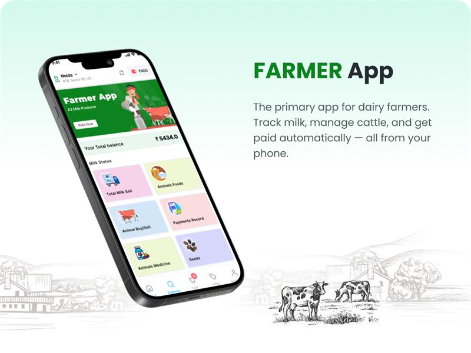
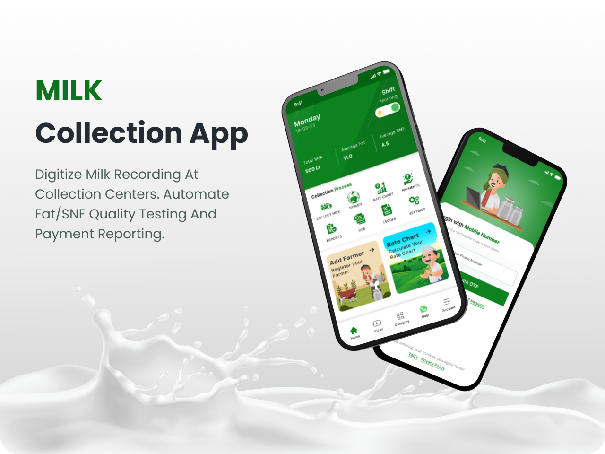
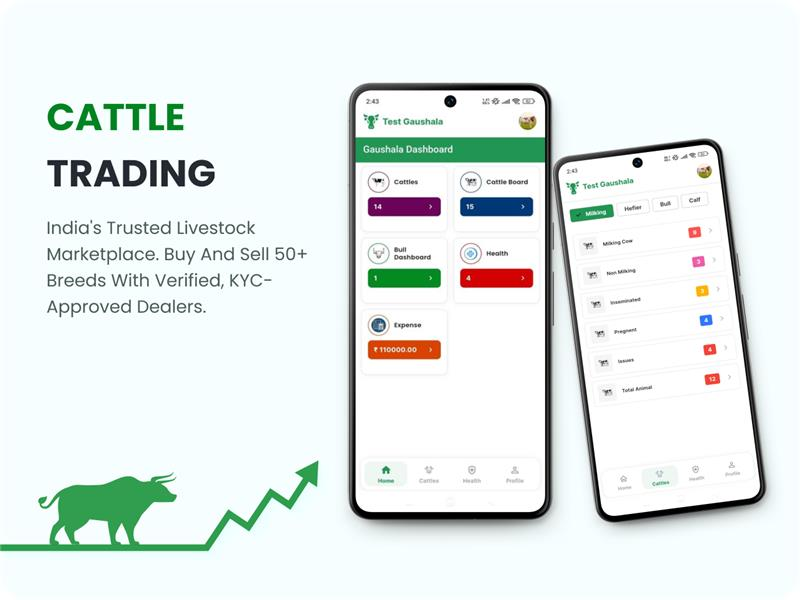

Meet the Most Celebrated Bos Indicus
Each breed unique — heat tolerant, disease resistant, and celebrated for A2 milk.

Gir Saurashtra
The most renowned Bos Indicus breed with distinctive convex forehead and drooping ears. High milk yield (8–12 L/day) and excellent heat tolerance. Originated from Gir forests of Gujarat.
- A2 Beta-casein milk
- Superior disease resistance
- Used in crossbreeding programs

Sahiwal
Best dairy breed among zebu cattle. Heavy milker (8–14 L/day) with strong immunity. Originates from Montgomery region (Pakistan-India border). Docile temperament.
- Rich butterfat content
- Ideal for tropical climates
- Heat & tick resistant

Tharparkar
Dual-purpose breed (milk + draught) from Thar desert. Gray-white coat, excellent walking ability. Known for longevity and adaptability to scarce fodder.
- Milk: 6–10 L/day
- Exceptional endurance
- Resilient to drought
Kankrej
Graceful breed from Rann of Kutch. Lyre-shaped horns, powerful frame. Used in developing the ‘Brahman’ breed of USA. Good milk yield (6–9 L/day).
- High fertility rate
- Excellent draught ability
- Heat & humidity tolerant

Ongole (Nellore)
Magnificent draft breed from Andhra Pradesh. Heavy muscling, compact body. Prized for beef quality in Brazil. Milk yield moderate (3–6 L/day).
- Strong disease resistance
- Ideal for organic systems
- High libido in bulls

Vechur
World’s smallest cattle breed from Kerala. Critically endangered but treasured for high milk fat and medicinal properties. Ideal for smallholder farms.
- Miniature size (80–90 cm)
- High A2 beta-casein
- Low maintenance cost